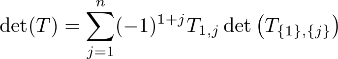
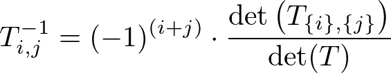

Maximum Matching
コードについての説明
(一般の)グラフの(重みなし)最大マッチングを求める乱択アルゴリズム. 最大マッチングを求めるアルゴリズムとしては Edmonds の花分解アルゴリズムが有名であるが, 同時に O(n^3) の乱択アルゴリズムも知られており, 以下はその実装となっている(参考1, 参考2 を参照しました). 実測はそんなに良くないが numeric に解けるので個人的に好き.
グラフ G が完全マッチングを持つことと G の Tutte 行列の行列式が恒等的に非ゼロであることの同値性を用いる. これは det 計算における置換に注目すると奇閉路(奇数位数の軌道)の存在する項は逆向きの項と打ち消し合って消え, 偶閉路のみからなる項のみ残る. 偶閉路のみからなる項のうち非ゼロのものがあるなら完マが取れるし、そのような項は他の項と打ち消し合って消えることはない.
よって O(n^2) 次の多変数多項式(det T) が恒等的に 0 であることが判定できれば良いのだが deterministic に行おうとすると効率的に解けないため各変数に乱数を代入し, その結果が 0 に等しいかどうかで判定する(Zp 上で行う).
Shwartz-Zippel Lemma より det T が恒等的に 0 でないのに上記の計算結果が 0 になってしまう(完全マッチングを持つのに持たないと判定する)確率は O(n^2 / p) となり, 例えば n = 10^2, p = 10^9+7 のときは 1 度の試行で十分である(念のため LOOP = 2 にしている).
(注) G の最大マッチングの数は rank(T) / 2 に等しい(rank が r の交代行列は r × r の正則な主小行列を持つことから言える).
(構築の話)
構築だがグラフが完全マッチングを持つという条件を保ったまま縮小していくことをする. 愚直に全辺についてそれを除いたグラフが完全マッチングを持つかどうかを調べていくと O(n^5) かかる.
行列 T から U ⊆ [1,..n] に含まれる添字の行および V ⊆ [1,..n] に含まれる添字の列を削除したものを T_{U},{V} と書くことにする. det T を 1 行目で余因子展開したものを
 と表せ, det T ≠ 0 なら T_1,j ≠ 0(辺(1, j) が存在する) で det (T_{1},{j}) ≠ 0 となるものが存在する.
また det (T_{1},{j}) ≠ 0 ⇒ det (T_{1,j},{1,j}) ≠ 0 より辺 (1, j) を取り除いた後のグラフは完全マッチングを持つ.
あとは det (T_{1},{j}) ≠ 0 となるような j をどうやって見つけてくるかだが  より, det (T_{1},{j}) ≠ 0 ⇔ T^{-1}_i,j (T の逆行列の (i, j) 成分) ≠ 0 が得られるので T の逆行列を計算することで j を求めることができる.
これを再帰的に繰り返すことで O(n^4) で構築することが可能になった(正確には O(n^(ω+1) time).
ここで逆行列計算を毎回する必要はなく T^{-1} をブロック行列と見てその Schur 補行列が T^{-1}_{i,j},{i,j} (T_{i,j},{i,j} の逆行列の意味) と一致するので辺を取り除いた後の Tutte 行列の逆行列は O(n^2) 時間で構築することができる.
つまり O(n^3) time で計算可能. ちなみにもっと頑張ると O(n^ω) まで落ちるらしい
(注) 完全マッチングを持たないグラフの場合 n - rank(T) 個の頂点を加えて元の全頂点に辺を貼ることで完全マッチングを持つグラフに変形可能(構成したマッチングのうち元からあった辺のものが最大マッチングに対応).
(関数)
add_edge(): 辺を追加する
perfect_matchching(): 完全マッチングがどうかの判定
maximum_matching(): 最大マッチングの数を返す
find_maximum_matching(): 最大マッチングの数を計算し, その組を返す
時間計算量: O(n^3)
コード
template <uint mod>
class ModInt {
private:
uint v;
static uint norm(const uint& x){ return x < mod ? x : x - mod; }
static ModInt make(const uint& x){ ModInt m; return m.v = x, m; }
static ModInt inv(const ModInt& x){ return make(inverse(x.v, mod)); }
static uint inverse(int a, int m){
int u[] = {a, 1, 0}, v[] = {m, 0, 1}, t;
while(*v){
t = *u / *v;
swap(u[0] -= t * v[0], v[0]), swap(u[1] -= t * v[1], v[1]), swap(u[2] -= t * v[2], v[2]);
}
return (u[1] % m + m) % m;
}
public:
ModInt() : v{0}{}
ModInt(const long long val) : v{norm(val % mod + mod)} {}
ModInt(const ModInt<mod>& n) : v{n()} {}
explicit operator bool() const noexcept { return v != 0; }
bool operator!() const noexcept { return !static_cast<bool>(*this); }
ModInt& operator=(const ModInt& n){ return v = n(), (*this); }
ModInt& operator=(const long long val){ return v = norm(val % mod + mod), (*this); }
ModInt operator+() const { return *this; }
ModInt operator-() const { return v == 0 ? 0 : mod - v; }
ModInt operator+(const ModInt& val) const { return make(norm(v + val())); }
ModInt operator-(const ModInt& val) const { return make(norm(v + mod - val())); }
ModInt operator*(const ModInt& val) const { return make((long long)v * val() % mod); }
ModInt operator/(const ModInt& val) const { return *this * inv(val); }
ModInt& operator+=(const ModInt& val){ return *this = *this + val; }
ModInt& operator-=(const ModInt& val){ return *this = *this - val; }
ModInt& operator*=(const ModInt& val){ return *this = *this * val; }
ModInt& operator/=(const ModInt& val){ return *this = *this / val; }
ModInt operator+(const long long val) const { return ModInt{v + val}; }
ModInt operator-(const long long val) const { return ModInt{v - val}; }
ModInt operator*(const long long val) const { return ModInt{(long long)v * (val % mod)}; }
ModInt operator/(const long long val) const { return ModInt{(long long)v * inv(val)}; }
ModInt& operator+=(const long long val){ return *this = *this + val; }
ModInt& operator-=(const long long val){ return *this = *this - val; }
ModInt& operator*=(const long long val){ return *this = *this * val; }
ModInt& operator/=(const long long val){ return *this = *this / val; }
bool operator==(const ModInt& val) const { return v == val.v; }
bool operator!=(const ModInt& val) const { return !(*this == val); }
bool operator==(const long long val) const { return v == norm(val % mod + mod); }
bool operator!=(const long long val) const { return !(*this == val); }
uint operator()() const { return v; }
friend ModInt operator+(const long long val, const ModInt& n) { return n + val; }
friend ModInt operator-(const long long val, const ModInt& n) { return ModInt{val - n()}; }
friend ModInt operator*(const long long val, const ModInt& n) { return n * val; }
friend ModInt operator/(const long long val, const ModInt& n) { return ModInt{val} / n; }
friend bool operator==(const long long val, const ModInt& n) { return n == val; }
friend bool operator!=(const long long val, const ModInt& n) { return !(val == n); }
friend istream& operator>>(istream& is, ModInt& n){
uint v;
return is >> v, n = v, is;
}
friend ostream& operator<<(ostream& os, const ModInt& n){ return (os << n()); }
friend ModInt power(ModInt x, long long n){
ModInt ans = 1;
while(n){
if(n & 1) ans *= x;
x *= x, n >>= 1;
}
return ans;
}
};
template<typename T> class mat : public vector<vector<T> > {
private:
int r, c; //行,列
public:
inline int row() const { return r; }
inline int column() const { return c; }
mat(const int n) : mat(n, n, 0){}
mat(const int n, const int m, T val = 0)
: vector<vector<T> >(n, vector<T>(m, val)), r{n}, c{m}{}
mat operator+(const mat& another) const {
mat<T> X(r, c);
for(int i = 0; i < r; i++){
for(int j = 0; j < c; j++){
X[i][j] = (*this)[i][j] + another[i][j];
}
}
return X;
}
mat operator-(const mat& another) const {
mat<T> X(r,c);
for(int i = 0; i < r; i++){
for(int j = 0; j < c; j++){
X[i][j] = (*this)[i][j] - another[i][j];
}
}
return X;
}
mat operator*(const mat& another) const {
mat<T> X(r, another.c);
for(int i = 0; i < r; i++){
for(int k = 0; k < c; k++){
if(!(*this)[i][k]) continue;
for(int j = 0; j < (another.c); j++){
X[i][j] += (*this)[i][k] * another[k][j];
}
}
}
return X;
}
int rank(){
mat<T> X(r, c);
for(int i = 0; i < r; i++){
for(int j = 0; j < c; j++){
X[i][j] = (*this)[i][j];
}
}
int res = 0;
for(int i = 0; i < c; i++){
if(res == r) return res;
if(!X[res][i]){
int pivot = res + 1;
for(; pivot < r; pivot++){
if(X[pivot][i]){
swap(X[res], X[pivot]);
break;
}
}
if(pivot == r) continue;
}
const T p = (T)1 / X[res][i];
for(int j = i + 1; j < c; j++){ X[res][j] *= p; }
for(int j = res + 1; j < r; j++){
if(!X[j][i]) continue;
for(int k = i + 1; k < c; k++){
X[j][k] -= X[res][k] * X[j][i];
}
}
res++;
}
return res;
}
bool det_zero() const {
mat<T> X(r);
for(int i = 0; i < r; i++){
for(int j = 0; j < c; j++){
X[i][j] = (*this)[i][j];
}
}
for(int i = 0; i < c; i++){
if(!X[i][i]){
int pivot = i + 1;
for(; pivot < r; pivot++){
if(X[pivot][i]){
swap(X[i], X[pivot]);
break;
}
}
if(pivot == r) return true;
}
const T p = (T)1 / X[i][i];
for(int j = i + 1; j < c; j++){ X[i][j] *= p; }
for(int j = i + 1; j < r; j++){
if(!X[j][i]) continue;
for(int k = i + 1; k < c; k++){
X[j][k] -= X[i][k] * X[j][i];
}
}
}
return false;
}
mat inverse() const {
mat X(r, 2*r);
for(int i = 0; i < r; i++){
for(int j = 0; j < r; j++){
X[i][j] = (*this)[i][j];
}
}
for(int i = 0; i < r; i++){
X[i][r+i] = 1;
}
for(int i = 0; i < r; i++){
if(!X[i][i]){
int pivot = i + 1;
for(; pivot < r; pivot++){
if(X[pivot][i]){
swap(X[i],X[pivot]);
break;
}
}
assert(pivot < r);
}
const T p = (T)1 / X[i][i];
for(int j = i + 1; j < 2*r; j++){ X[i][j] *= p; }
for(int j = 0; j < r; j++){
if(i == j || !X[j][i]) continue;
for(int k = i + 1; k < 2*r; k++){
X[j][k] -= X[i][k] * X[j][i];
}
}
}
mat res(r, r);
for(int i = 0; i < r; i++){
for(int j = 0; j < r; j++){
res[i][j] = X[i][r+j];
}
}
return res;
}
};
class Matching {
private:
int V;
vector<pair<int, int> > es;
vector<int> cnt;
random_device rnd;
mt19937 mt;
uniform_int_distribution<> randval;
static constexpr int LOOP = 2;
static constexpr uint mod = 1000000007;
mat<ModInt<mod> > inverse_22(const int id, const mat<ModInt<mod> >& invT){
ModInt<mod> invdev = (ModInt<mod>)1 / (invT[0][0]*invT[id][id] - invT[0][id]*invT[id][0]);
mat<ModInt<mod> > invN_3n_3n(2, 2);
invN_3n_3n[0][0] = invT[id][id] * invdev, invN_3n_3n[0][1] = -invT[0][id] * invdev;
invN_3n_3n[1][0] = -invT[id][0] * invdev, invN_3n_3n[1][1] = invT[0][0] * invdev;
return invN_3n_3n;
}
void schur_complement(const int id, mat<ModInt<mod> >& invT){
int sz = invT.row(), x = 0;
mat<ModInt<mod> >N_12_12(sz-2), N_12_3n(sz-2, 2), N_3n_12(2, sz-2);
for(int i = 1; i < sz; i++){
if(i == id) continue;
int y = 0;
for(int j = 1; j < sz; j++){
if(j == id) continue;
N_12_12[x][y] = invT[i][j];
N_3n_12[0][y] = invT[0][j], N_3n_12[1][y++] = invT[id][j];
}
N_12_3n[x][0] = invT[i][0], N_12_3n[x++][1] = invT[i][id];
}
invT = N_12_12 - N_12_3n * inverse_22(id, invT) * N_3n_12;
}
vector<pair<int, int> > find_matching(const mat<ModInt<mod> >& T){
int sz = T.row();
vector<pair<int, int> > res;
mat<ModInt<mod> > invT = T.inverse();
vector<int> vset(sz); iota(vset.begin(), vset.end(), 0);
for(int i = sz; i > 0; i -= 2){
for(int j = 1; j < i; j++){
if(invT[0][j] && T[vset[0]][vset[j]]){
if(vset[j] < V) res.emplace_back(vset[0], vset[j]);
vset.erase(vset.begin()), vset.erase(vset.begin() + j - 1);
schur_complement(j, invT);
break;
}
}
}
return res;
}
public:
Matching(int node_size) : V(node_size), cnt(V+1, 0), mt(rnd()), randval(0, mod-1){}
void add_edge(int u, int v){
es.push_back(make_pair(u, v));
}
bool perfect_matchching(){
for(int i = 0; i < LOOP; i++){
mat<ModInt<mod> > A(V);
for(auto e : es){
int r = randval(mt);
A[e.first][e.second] = r, A[e.second][e.first] = -r;
}
if(!A.det_zero()) return true;
}
return false;
}
int maximum_matchching(){
for(int i = 0; i < LOOP; i++){
mat<ModInt<mod> > A(V);
for(auto e : es){
int r = randval(mt);
A[e.first][e.second] = r, A[e.second][e.first] = -r;
}
cnt[A.rank()]++;
}
return (int)(max_element(cnt.begin(), cnt.end()) - cnt.begin()) / 2;
}
vector<pair<int, int> > find_maximum_matching(){
int res = maximum_matchching();
int newV = 2*(V-res);
for(int i = 0; i < V; i++) for(int j = V; j < newV; j++) add_edge(i, j);
for(int i = 0; i < LOOP; i++){
mat<ModInt<mod> > A(newV);
for(auto e : es){
int r = randval(mt);
A[e.first][e.second] = r, A[e.second][e.first] = -r;
}
if(!A.det_zero()) return find_matching(A);
}
}
};
verify 用の問題
完全マッチングの判定の verify(実際には微妙に異なる)
AOJ : Sunny Graph
提出コード
最大マッチングの判定および構築の verify
Atcoder : 一般最大マッチング
提出コード(非想定解のため TLE しています.)